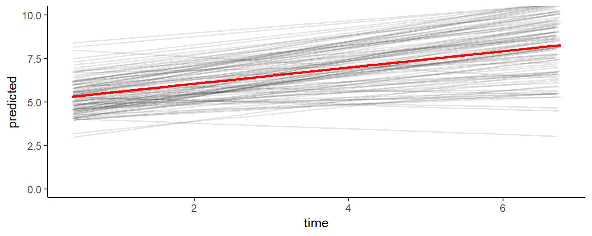

Chapter 9 Mixed Modeling
EMA data are time-series that are characterized by complex correlational structures, irregular sampling intervals, missing data, and substantive individual differences. Mixed models are well-suited to deal with these data. This chapter provides a brief introduction to conducting mixed model analysis of EMA data in R.
9.1 The Mixed Model
Mixed modeling can be understood as a regression technique in which separate regression functions are estimated for each cluster in the data set. In EMA data, these clusters are defined by the participants. Data from the same participant are expected to be correlated, and one way to honor this correlation is to conceptualize a separate regression for each participant. This idea, in the simplest regression model, can be expressed as:
\[\begin{equation} Y_{ij} = intercept_{i} + \epsilon_{ij} \end{equation}\]This models the expected value of the j-th measurement of participant i as the mean of all measurements of participant i, plus error. It defines a set of regression functions - one for each participant. The regression functions are, however, not independent. Mixed models divide the intercepts of the individual participant regression functions into two components: 1) the intercept of the group (interceptg; the mean intercept of all regression functions), and 2) a participant-specific component interceptp (i.e., the difference between the intercept of the participant and the mean intercept), i.e.:
\[\begin{equation} intercept_{i} = intercept_{g} + intercept_{p} \end{equation}\]The group intercept is called the ‘fixed’ effect. If we would gather more data from new participants, we would expect to find approximately the same group intercept. The participant-specific component of the intercept is known as the ‘random’ effect. If we sample new data, we would expect a similar variance of the participant-specific intercept components around the group intercept. This “mixing” of fixed and random effects is what gives mixed modeling its name.
9.2 Simulating Example Data
To understand analysis techniques, it often helps to apply the technique to simulated data, in which parameters of interest are known. Here, we will use the sim_ema function from package emaph, to simulate EMA mood assessments of 100 participants, who rate their mood, three times per day, for one week. As you can learn from the documentation of sim_ema (see ?sim\_ema), the function expects at least two arguments: the definition of a sample plan (see ?sample\_plan), and a specification of the data-generating model, in the form of a list defining fixed effects, the random effects, and residual variance (i.e, the error).
# Simulating ema data.
library(emaph)
plan <- sample_plan(n_participants = 100,
n_days = 7,
times = c("10:00-11:00",
"13:00-14:00",
"16:00-18:00"))
d1 <- sim_ema(plan,
mm_par = list(fixed = c(intercept = 5),
random = c(intercept = 1),
error = .5),
lim = c(0, 10))From the code, you learn that we set the mean mood (interceptg) to 5, the variance around this mean - var(intercepti) - to 1, and the variance around these means within participants - the error - to .5. Figure 9.1 shows EMA mood ratings of the first 6 participants in the simulated data set, which we can use to check the simulation. As specified, mean mood ratings of the participants (the red lines) vary around 5 (the grey dashed line). So far, so good.

Figure 9.1: Simulated EMA data of Six Participants.
9.3 Fitting a Mixed Model in R
Now, let’s fit a mixed model to the data, to see whether the simulation parameters are detected. For this, we will use the lme function, from package nlme (Pinheiro, Bates, DebRoy, Sarkar, & R Core Team, 2018). The code snippet below shows how to do this.
The first argument of the lme function, Y ~ 1, specifies the fixed ‘effect’ (in this case: the mean intercept). The second argument, random =~ 1 | id specifies the random effect. In this model, intercepts are allowed to vary between participants. The fitted model is assigned to a variable (‘fm’), which we will use later to study the fitted model.
# Fitting a mixed model with lme.
library(nlme)
fm <- lme(Y ~ 1, random = ~ 1 | id,
data = d1)We can now extract the fixed effects regression coefficients table, by calling the summary function on the fitted model. The estimated intercept should be around 5 (as this is a finite sample, we expect some deviation):
# Print fixed effects.
summary(fm)$tTable
#> Value Std.Error DF t-value p-value
#> (Intercept) 5.04 0.0889 2000 56.7 0Random effects and residual variance are shown by the VarCorr function. Again, since we specified the data ourselves in this case, we know the ‘true’ value of these parameters: the random intercept variance should be around 1 and the residual error variance should be close to 0.5.
# Fitted random effects.
VarCorr(fm)
#> id = pdLogChol(1)
#> Variance StdDev
#> (Intercept) 0.766 0.875
#> Residual 0.506 0.711It can be instructive to plot the predicted values of the model, to make clear how the model ‘thinks’. As shown by Figure 9.2, the model predicts a series of straight lines, one for each participant, that vary around 5 (the red line).
# Saving predicted values.
d1$predicted <- predict(fm)Figure 9.2: EMA ratings, of each participant in the simulated data set, as predicted by the intercept-only mixed linear model.
9.4 Adding Time as a Predictor
Now that we know how to fit a simple mixed model, we can consider a more complex scenario. In the first data set, participants’ mood ratings did not change over time. Scores varied around a stable mean during the full week. Hence, there was no need to model a time effect. But suppose we would expect a systematic improvement of mood ratings over time, for instance in response to a mental health intervention?
Let’s first call sim_ema again, with parameters that will result in data in which mood rating increase over the course of the week, 0.5 scale points per day. Let’s also assume that individual participants will vary in the degree of mood improvement: the mean time effect will be 0.5, but this parameter is allowed to vary between participants, with a variance of 0.1.
# Simulating ema data (time effect).
d2 <- sim_ema(plan,
mm_par = list(fixed = c(intercept = 5, time = 0.5),
random = c(intercept = 1, time = 0.1),
error = .5),
lim = c(0, 10))Figure 9.3 shows the data of the first six participants in the second data set. Both the intercept and the slope vary across the participants. Some participants improve more over time, and others improve less: the slope in this data set is a random effect.

Figure 9.3: Simulated EMA data of Six Participants (Time-varying model).
To fit the extended mixed model, time can simply be added to both the fixed and random arguments of the ‘lme’ function. Fixed effects estimated of this model should be around 5 and 0.5, since that is how we specified the data. Calling ‘summary’ on this function, we see that the fixed time effect is significant.
# A mixed model, with a random slope.
library(nlme)
fm <- lme(Y ~ 1 + time, random = ~ 1 + time | id,
data = d2)
summary(fm)$tTable
#> Value Std.Error DF t-value p-value
#> (Intercept) 5.148 0.122 1999 42.2 9.74e-279
#> time 0.483 0.027 1999 17.9 2.33e-66The random effects now have four components: the variance of the intercept, the variance of the slope, the residual error and the correlation between the random intercept and the random slope.
# Extracting random effects.
VarCorr(fm)
#> id = pdLogChol(1 + time)
#> Variance StdDev Corr
#> (Intercept) 1.3944 1.181 (Intr)
#> time 0.0674 0.260 -0.176
#> Residual 0.4742 0.689Model predictions clearly show how the mixed model estimated varying intercepts and slopes, that, on average, approximate the fixed effect regression formula Y = 5 + 0.5 * time that was used to generate the data.
d2$predicted <- predict(fm)
ggplot(d2, aes(x = time, y = predicted, group = id)) +
geom_line(alpha = .1, size = .6) +
geom_smooth(aes(group = NULL), method = "lm", color = "red") +
coord_cartesian(ylim = c(0, 10)) + theme_classic()
9.5 Adding a Two-Group Comparison
In data-set 1, mood ratings did not change during the week, while in data-set 2, the mood ratings increased. Suppose the two data-sets reflect the data that you collect in a two-group RCT, in which you compare the effects of a mental health intervention (data-set 2) against a waiting list condition (data-set 1). By combining the two data-sets, we can illustrate how to conduct a group comparison with ‘lme’.
Since the two data-sets are already available (in d1 and d2), the new data set can be created with just three lines of code (below). In the first line, the ‘rbind’ function is used to combine the rows of data-set 1 and 2 into a new variable: d3. The second line adds a group indicator to d3. The third line updates the ids of the participants in the second group, to differentiate the participants in the second group from the participants in the first group.
# Two-group simulation.
d3 <- rbind(d1, d2)
d3$group <- factor(c(rep(0, nrow(d1)), rep(1, nrow(d2))), labels = c("control", "treatment"))
d3$id[d3$group == "treatment"] <- d3$id[d3$group == "treatment"] + 100The effect of the intervention can be tested by adding a (fixed) ‘time * group’ interaction effect to the model. This effect, we know, is .5, and, as can be seen, this is what the model picks up:
# A mixed model, with two groups.
library(nlme)
fm <- lme(Y ~ 1 + time * group, random = ~ 1 + time | id,
data = d3)
round(summary(fm)$tTable, 2)
#> Value Std.Error DF t-value p-value
#> (Intercept) 5.05 0.11 3998 46.51 0.00
#> time 0.00 0.02 3998 -0.08 0.94
#> grouptreatment 0.10 0.15 198 0.65 0.51
#> time:grouptreatment 0.48 0.03 3998 17.15 0.00In Figure 9.4 below, EMA mood ratings predicted by the fitted model show how the model detects 1) the fixed between-group effect, and 2) the variance in intercepts and slopes in both groups.
Figure 9.4: Predicted mood ratings
9.6 Next Steps
In this chapter, we introduced mixed model analysis of EMA data in R. To do so, we could only touch upon the theoretical foundations of mixed models, and we deliberately used simple examples with clean simulated data. Readers, who consider the application of mixed models, are strongly advised to study additional resources.
The authoritative reference for mixed effect modeling in R is a book by Pinheiro and Bates (2000). To fully appreciate this book, however, a strong background in mathematical statistics is required. Thorough introductions in the topic are further found in the work of Prof. dr. Jos Twisk (Twisk, 2006, 2013), who also teaches an applied mixed models course at the Department of Epidemiology and Biostatistics at the Vrije Universiteit Medical Center (see: http://epidm.nl/en/courses/mixed-models/).
References
Pinheiro, J., Bates, D., DebRoy, S., Sarkar, D., & R Core Team. (2018). nlme: Linear and nonlinear mixed effects models. Retrieved from https://CRAN.R-project.org/package=nlme
Pinheiro, J., & Bates, D. M. (2000). Mixed effects models in S and S-Plus. New York: Springer Verlag. https://doi.org/10.1198/tech.2001.s574
Twisk, J. (2006). Applied multilevel analysis: A practical guide. Cambridge University Press.
Twisk, J. (2013). Applied longitudinal data analysis for epidemiology: A practical guide (2nd revised edition). Cambridge University Press.